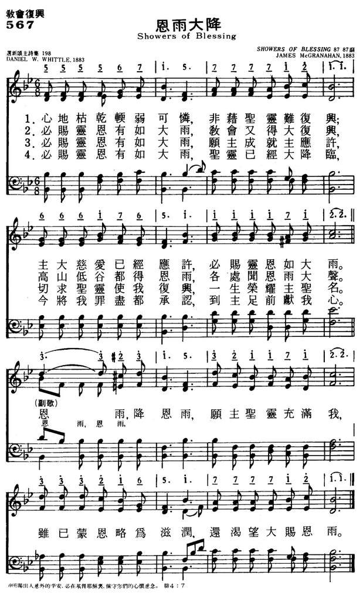

1216 256 There Shall Be Showers of Blessing 恩雨大降
|
|
|
|
1 There shall be showers of blessing:
This is the promise of love;
There shall be seasons refreshing,
Sent from the Savior above.
Refrain:
Showers of blessing,
Showers of blessing we need:
Mercy-drops round us are falling,
But for the showers we plead.
2 There shall be showers of blessing,
Precious reviving again;
Over the hills and the valleys,
Sound of abundance of rain. [Refrain]
3 There shall be showers of blessing:
Send them upon us, O Lord;
Grant to us now a refreshing,
Come and now honor Thy Word. [Refrain]
4 There shall be showers of blessing:
Oh, that today they might fall,
Now as to God we're confessing,
Now as on Jesus we call! [Refrain]
Source: African Methodist
Episcopal Church Hymnal #216
|
心地枯乾軟弱可憐，非藉聖靈難復興，
主大慈愛已經應許，必賜靈恩如大雨。
必賜靈恩有如大雨，教會又得大復興，
高山低谷都得恩面，各處聞恩雨大聲。
必賜靈恩有如大雨，願主成就主應許，
切求聖靈使我復興，一生榮耀主聖名。
必賜靈恩有如大雨，聖靈已經大降臨，
今將我罪盡都承認，到主足前獻我心。
副歌：恩雨，降恩雨，願主聖靈充滿我，
雖已蒙恩略為慈潤，還渴望大賜恩雨。
|
|

https://www.mred365.cn/szxg/7570.html

|
|
|
http://www.hymncompanions.org/Jan/08/stream.php
心地枯乾軟弱可憐，非藉聖靈難復興，
主大慈愛已經應許，必賜靈恩如大雨。
必賜靈恩有如大雨，教會又得大復興，
高山低谷都得恩雨，各處聞恩雨大聲。
必賜靈恩有如大雨，願主成就主應許，
切求聖靈使我復興，一生榮耀主聖名。
必賜靈恩有如大雨，聖靈已經大降臨，
今將我罪盡都承認，到主足前獻我心。
（副歌）
恩雨，降恩雨，願主聖靈充滿我，
雖已蒙恩略為滋潤，還渴望大賜恩雨。
 (請點耳機收聽)
(請點耳機收聽)
樹木花草五穀百物需時雨滋潤，基督徒的靈命也需甘霖澆灌以免枯萎。
「恩雨大降」是韋特（Daniel W. Whittle, 1840-1901，見一月三十日）和麥格翰（James
McGranahan, 1840-1907）合作的作品。 麥格翰出生美國賓州。

當年賓州和俄亥俄州是福音詩歌的發祥地。
http://www.hymncompanions.org/Jan/30/stream.php
「賜下恩雨」的作者楠敦（El Nathan）是韋特（Daniel W. Whittle,
1840-1901）的筆名。 韋特出生於美國麻省，廿一歲時參加南北戰爭，在步兵營任少尉，後晉升到陸軍少校。 以後大家都稱他「韋特少校」。
1862年夏，在他結婚的翌日，他隨沙曼將軍（General Sherman）進軍海灘，在維克斯堡（Vicksburg）一役受傷，失去右手，被擄。
在俘虜營中，他開始讀離家前母親送他的新約聖經，不久決意信主。
戰後他退役回家，在芝加哥一家有名的鐘錶公司擔任司庫。 不久他遇見名佈道家慕迪。 他們的相遇相知，改變了韋特的一生。
1873年，韋特辭去了高薪的工作，加入了慕迪佈道團。 最初，他與白利士（Philip P. Bliss, 見二月廿四日）在音樂聖工上搭配事奉。
白利士意外身亡後，他便與作曲家麥格翰（James McGranahan，見一月八日）同工。
他寫了二百多首聖詩，多數是麥格翰譜曲。他們兩人曾多次同赴英國佈道。
他們合作的名詩，尚有「主活在我心」（Christ Liveth in Me），「高舉主旗」（The
Banner of the Cross）等。
麥格翰的祖先是蘇格蘭的愛爾蘭人，他的父親務農，麥格翰自幼有嘹喨的歌喉，因此父親送他進音樂學校就讀。

麥格翰在十九歲時，已是當地知名的音樂教師，並組織了他第一個合唱團。
1861-62年間，他繼續在音樂師範學校深造，隨數位名師學習。 以後數年，他在紐約，賓州各地舉辦音樂會，又訪名師不斷進修。
有人向麥格翰建議，以他的稟賦，若再加以歌劇訓練，勢必名利雙收；而他的摯友白利士（Philip Bliss）則不斷的勸他，將他美妙的歌聲為主使用。
在白利士遇難前一週，還寫信勸他考慮此事。
白利士夫婦遇難後，麥格翰旋即趕去料理他們的後事。 在那出事地點，他首次和韋特相遇，而韋特直覺地感到，「這是白利士所揀選的繼承人」。
他們在同返芝加哥途中，一起討論，同心禱告。 最後麥格翰決定，終身以詩歌事奉神。
他是第一位組織完全是男聲的唱詩班。 除了和韋特合作外，他也和孫基等人合編許多福音詩歌集。 他自己也寫歌詞，如「何等奇妙的救主」（O
What a Savior）等。
這首詩是根據以西結書34:26「……我也必叫時雨落下，必有福如甘霖而降。」
它的重點在于「主必賜福如雨大降」，恩雨是指信徒要得到聖靈充滿。
在中國，這首聖詩，最早由王載牧師在他的佈道會中介紹，後來變成靈恩派教會特別喜愛的一首聖詩。
中英文聖詩集參考
英文歌名 Showers
of Blessing
頌主新歌 567
頌主新歌(中英文雙語本) 573
教會聖詩 395
新聖詩 35
歡欣讚美 430
聖徒詩集 648
聖詩 568
讚美 167
讚美詩(新編) 206

http://www.xueshengshi.com/?p=4952
简介（一） （来源：《岁首到年终》）
恩雨大降
There Shall Be Showers Blessing
Daniel W. Whittle, 1840-1901
我必使他们与我山的四围成为福源，我也必叫时雨落下，必有福如甘霖而降。（ 结 34:26 ）
圣灵是神智能的总结，祂浩大的能力，贯通于宇宙之间。每个基督徒一重生，即有圣灵的内住，运行在我们心中，将我们塑造成合祂使用的器皿，预备行各样的善事。
神与人同居，是一个极大的奥秘。神是灵，神人之间的交通是借着圣灵，祂是神人之间的道路。信徒若爱主、不贪爱世界、不体贴肉体、愿意与神交通，神就不因人的卑微不配，降卑在灵里与他们交往。神的灵柔和谦卑，与人同在、谈话、教导、施恩和感化。但信徒若属肉体，对圣灵就不易捉摸得到，更不易听见衪微小的声音和感动了。神的儿女若抗拒圣灵、销灭祂的感动或是出于肉体和血气的作为，妄自作主，就会把圣灵摒诸于门外，并使祂担忧。但愿我们享受与祂同在的喜乐和甜蜜。
本诗作者 Daniel W. Whittle 1840 年 11 月 22 日生于美国麻州 Chicopee Falls，原在 Elgin
钟表公司工作，受布道家慕迪先之鼓励，放弃事业，全心全意投入事奉。在慕迪布道团中，与 Philip P. Bliss 配搭音乐事工。 1876 年 Bliss
因火车车祸死亡，由 James McGranahan 接续 Bliss 之位置。两人同工直到 1890 年。
这首「恩雨大降」即是两人合作成果。作曲者 James McGranaham 系 1840 年 7
月生于宾州，是擅长男高音之歌手，但将恩赐为主使用。本诗最早发表于 1883 年出版的福音圣诗第 4 首。
1 心地枯干软弱可怜，非藉圣灵难复兴；主大慈爱己经应许，必赐灵恩如大雨。
2 必赐灵恩有如大雨，圣灵已经大降临，今将我罪尽都承认，到主足前献我心。
（副歌）
恩雨，降恩雨，愿主圣灵充满我，虽已蒙恩略为滋润，还渴望大赐恩雨。
＊凡是人按着自己能力做的事，仅有短暂的影响；惟独借着永远的灵完成的事，能存到永�琚I── 陶恕
http://blog.udn.com/hornman1965/126662540
2019/05/13 16:02
聖詩人-韋德Major D. W. Whittle的生平與信主的故事

說他是聖詩人，還有一點勉強，因為他一向被稱作「韋德少校」，他曾經是銀行員，是南北戰爭時期的軍官，是鐘錶公司的財務，他與著名的佈道家慕迪Dwight L.
Moody (1837-1899)是好友，受到穆迪的影響，也成為一名巡迴佈道家，在近代的教會歷史上佔有很重要的地位。
韋德，1840年出生於美國麻州的奇科皮市(Chicopee Falls)，他的全名是Daniel Webster
Whittle，聽說是父親根據一位非常受景仰的美國政治家丹尼爾˙韋伯斯特Daniel Webster
(1782-1852)而取的名字，似乎是期待他的兒子能夠像這位政治人物一樣正直、堅守原則吧！
韋德的信仰經歷，首先來自母親，母親十分敬虔，將基督信仰帶給自己的四個孩子，但是韋德自己提到，可能時間還沒到，當時的他並沒有真正認識基督。他第一次的親身信仰經歷，是早年在芝加哥的銀行工作的時候，當時在工作之餘，他有參與芝加哥的會幕教會主日學(Tabernacle
Sunday-school)的服事，有一天夜裡，他一個人在銀行值班，在寂靜無人之中，他將自己奉獻給神，而在那個主日學的服事之中，他認識了一位女孩叫做韓森Miss
Abbie Hanson，後來成為他的妻子。
1861年，他加入美國陸軍，隔一年，他隨著步兵團啟程往南參與南北戰爭，而在出發前一晚，他趕緊與韓森小姐舉行婚禮。在一場戰事中，他不幸的受傷，這個傷勢使他失去了右手臂，之後還被送進戰俘營。戰爭之後，他被授予少校官階，從此他就被稱為「韋德少校」。
他真正的信主，就是在這段受傷養病的過程之中，根據他自己的描述，在他出發赴戰場之前，母親流著眼淚送他，因為不知道這個孩子還能不能再見到，並且，將一本小小的新約聖經放到隨行的帆布包中，當他受傷在醫院養病的時候，有一天覺得很想看些甚麼書，於是翻翻自己隨身攜帶的，翻到這本聖經，開始從馬太福音一章一章的讀，讀到啟示錄，又回頭從馬太福音讀，就這樣反反覆覆的讀，越讀越有興趣，但是他坦承，當時他還不認為自己是基督徒。有一天晚上，醫院的護士喊醒他，要他去為一名年輕的戰士禱告，這嚇到他了，因為他從來沒有自己禱告過，於是回絕了這個請求，但是護士說，整個醫院包括他自己沒有一個人適合，「只有你，因為我看到你在讀聖經。」他只好勉強走到病房的另一頭，看到一個十多歲的年輕人，受了重傷，在哀求說「誰能為我禱告？我快死了，我是個罪人，誰能為我禱告，祈求上帝赦免我的罪？」他感受到上帝在催促他，於是跪在這個男孩面前，「首先向上帝認罪，求神赦免，然後為這個男孩禱告。」當他禱告完起身時，看到這個男孩已經去世了，但是帶著平安的面容，這讓他堅信，上帝透過這個男孩的祈求帶領他接受上帝成為他的救主，並且相信將來兩人必要在天上相會。
戰爭之後，韋德在一家鐘表公司工作，過了幾年，受到慕迪的影響，放下自己的工作，全時間服事上帝，成為巡迴佈道家，他與慕迪的關係十分深厚，他回憶到當時受傷後有一次回到會幕教會，他自己看著自己受傷的樣子，覺得很狼狽，不配為軍人，但是慕迪第一眼看到他，邀請全會眾為這位軍人歡呼致敬，這深深的激勵了他，也開始了他與慕迪之間的友誼，甚至後來，他的女兒還嫁給慕迪的兒子。
韋德的佈道事工中，有三位音樂家與他共同配搭，造就了音樂與佈道結合的美好典範，第一位是白立士Philip P.
Bliss，白立士因為火車翻車事件去世之後，麥格翰James McGranahan接續了他的工作，之後是史滌平（George C.
Stebbins,1846-1945），除了傳講信息，韋德也寫詞，由這幾位音樂家譜曲，成為動人的福音詩歌，有的歌，他是以"El
Nathan"這個筆名出版的，慕迪曾說：「我覺得韋德少校寫出了一些這個世紀最偉大的詩歌」。他自己曾說「我期待我所寫的詩歌，沒有一首不帶著信息的。」
最後，我們同樣的期待各位讀友，聽過哪一首韋德所寫的詩歌嗎？歡迎分享。
https://wordwisehymns.com/2012/06/04/showers-of-blessing/
Words: Daniel Webster Whittle (b. Nov. 22, 1840; d. Mar. 4, 1901)
Music: James McGranahan (b. July 4, 1840; July 9, 1907)
Links:
Wordwise Hymns (Daniel Whittle born, died)
The Cyber Hymnal
Note: This song is sometimes given the longer title There Shall Be Showers of
Blessing. For some reason, many hymn books fail to include the fifth stanza of
the song. It is significant, as it makes a practical and personal application.
You might consider including it in the church bulletin, if you hymnal doesn’t
have it. Or projecting it for all to see, when the time comes to sing the song.
The partnership of “Major” Whittle (his rank in the Civil War) and James
McGranahan was a rich and productive one for eleven years. But it began at a
scene of terrible tragedy. When hymn writer Philip Bliss and his wife were
killed in a train accident in 1876, Mr. McGranahan hurried to the scene. There
he met Daniel Whittle, the evangelist with whom Bliss had been working. Beside
the wreck, the two men formed a friendship that was to be fruitful in
evangelistic ministry and the creation of gospel music later. Among many other
songs, this team gave us:
Beloved, Now Are We the Sons of God
Christ Liveth in Me
I Know Whom I Have Believed
Showers of Blessing
The Banner of the Cross
The Crowning Day Is Coming
The actual phrase, “showers of blessing,” occurs only once in the Scriptures, in
Ezekiel 34:26. There it describes the time of millennial blessing in
store for the nation of Israel, under the coming reign of their Messiah King.
However, the words also provide an apt description of the times of spiritual
blessing poured out from the Lord upon the body of Christ, or upon individual
Christians.
CH-1) There shall be showers of blessing:
This is the promise of love;
There shall be seasons refreshing,
Sent from the Saviour above.
Showers of blessing,
Showers of blessing we need:
Mercy drops round us are falling,
But for the showers we plead.
Words such as revive and revival are found a number of times in the Bible. Often
they refer to a physical revival, the restoration of physical life (cf. I Kgs.
17:22). But there can also be a spiritual reviving, a restoration of
spiritual vitality and fruitfulness in the people of God. Though some use the
term almost as a synonym for a person’s soul salvation, it does not refer to
that. The one who is dead in sins needs the new birth, not revival. Spiritual
revival is needed by believers who have grown cold, or who have backslidden and
need to repent and return to the Lord.
Some teach that if we simply pray hard enough, the Lord will bring widespread
revival to Christendom. But that teaching isn’t found in the Bible–certainly not
on this side of the cross. Widespread revival does happen occasionally, and the
prayers of God’s people are certainly involved. But many times God’s people pray
earnestly for revival fires and they don’t come. Revival seems to be a sovereign
work of God that cannot be programmed for or prayed down.
What we can and should do is be sensitive when there’s a need for personal and
individual revival in our own hearts, and call upon the Lord to restore our own
souls. As the concluding stanza of the gospel song indicates, this can only
happen as we confess our sins and return to a path of consistent faith and
obedience toward God.
When we are revived according to the Word of God (Ps. 119:25), and
brought back to following the ways of God (vs. 37, 40), the effects of this can
spread, and others will be drawn closer to the Lord. This kind of personal
revival is what Daniel Whittle’s song focuses on particularly.
Thus says the High and Lofty One who inhabits eternity, whose name is Holy: ‘I
dwell in the high and holy place, with him who has a contrite and humble spirit,
to revive the spirit of the humble, and to revive the heart of the contrite
ones” (Isa. 57:15).
CH-3) There shall be showers of blessing;
Send them upon us, O Lord;
Grant to us now a refreshing,
Come, and now honour Thy Word.
CH-5) There shall be showers of blessing,
If we but trust and obey;
There shall be seasons refreshing,
If we let God have His way.
Questions:
1) What are the indications in an individual’s life that revival is needed?
2) How does individual revival sometimes affect others around?
https://en.wikipedia.org/wiki/Daniel_Webster_Whittle
From Wikipedia, the free encyclopedia
|
Daniel Webster Whittle
|
.jpg/220px-Daniel_Webster_Whittle_(from_LCCN2005678064).jpg) |
|
Born |
November 22, 1840 |
|
Died |
March 4, 1901 (aged 60) |
Major Daniel Webster Whittle (November
22, 1840, Chicopee
Falls, Massachusetts - March 4, 1901, Northfield,
Massachusetts) was a 19th-century American gospel
song lyricist, evangelist,
and Bible teacher.
Life and career[edit]
Whittle was associated with the evangelistic
campaigns of Dwight
Lyman Moody.[1]
Marrying Abbie Hanson in 1861 the night
before he deployed with Company B
of the 72d
Illinois Infantry, he served in the American
Civil War. He was wounded at Vicksburg and
marched with General William
Tecumseh Sherman’s forces through Georgia.
Whittle was breveted with
the rank of major at
the end of the war and is still widely known among hymnologists as Major
Whittle. Settling in Chicago to
work for the Elgin
Clock Company, he became closely associated with Moody, who
successfully encouraged him to go into evangelistic work. [2] One
of Whittle’s war experiences served as the basis for the gospel song "Hold
the Fort" by Philip
Paul Bliss,[3] of
whom Whittle edited a biography.[4] He
was also known to have worked with Bliss' sister, Mary
Elizabeth Willson.
Whittle wrote mostly under the pseudonym "El
Nathan" although editors of later hymnals routinely credit his actual
name. Of his approximately 200 hymns, "I Know Whom I Have Believed" and
"Showers of Blessing" are among the most familiar. James
McGranahan wrote the tunes for both of those and for Whittle's "Banner
of the Cross" as well. The name of the tune associated with "I Know Whom I
Have Believed" is EL NATHAN, Whittle's pseudonym.[5] The
tune for Whittle's "Moment by Moment" (first line "Dying with Jesus") was
composed by Whittle's daughter Mary "May" Whittle Moody.
Writings of
Daniel W. Whittle[edit]
Example of hymn: "I Know Whom I Have Believed"[edit]
I know not why God's wondrous grace
To me He hath made known;
Nor why—unworthy—Christ in love
Redeemed me for His own.
[REFRAIN]
But I know whom I have believèd
And am persuaded that he is able
To keep that which I've committed
Unto Him against that day.
—
"I Know Whom I Have Believed", Gospel
Hymns Nos. 1 to 6 Complete. New York: The Biglow & Main Co. and
The John Church Co. 1894. The refrain is drawn verbatim from Paul in
2 Timothy 1:12.
References[edit]
External links[edit]
.jpg)